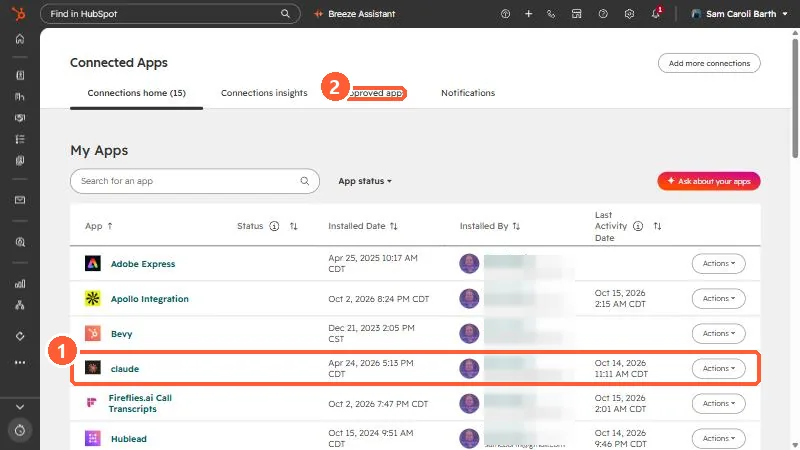
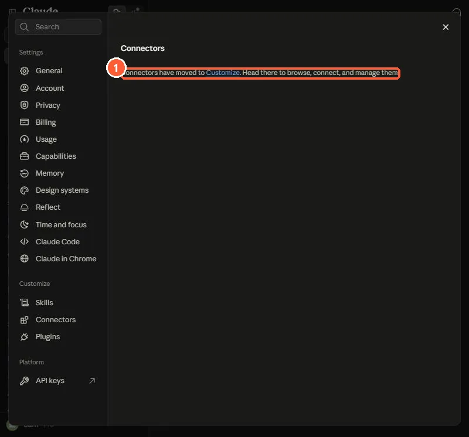
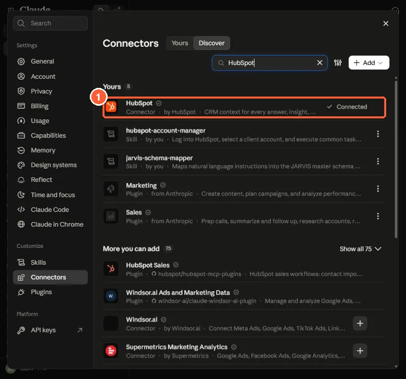
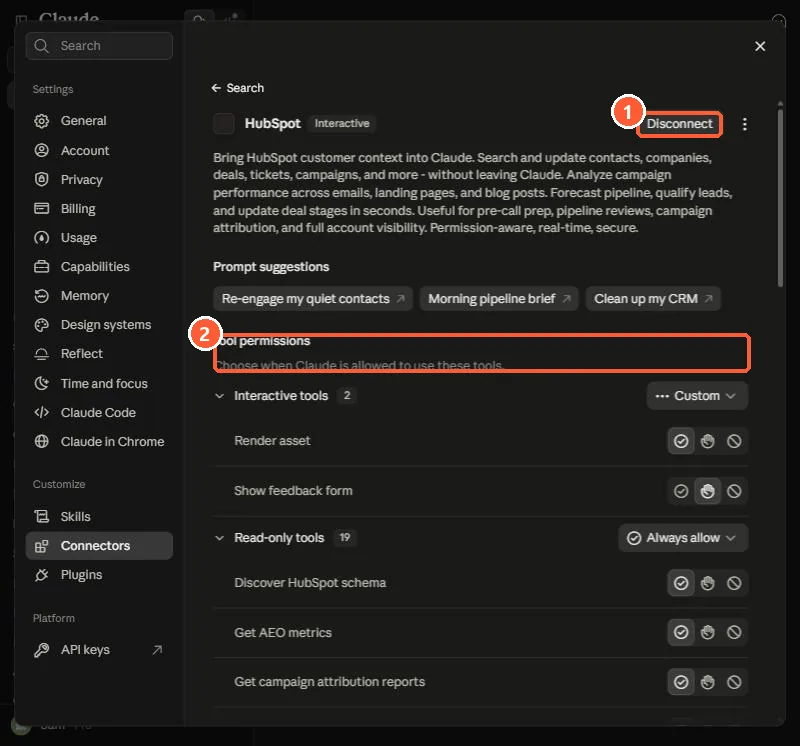
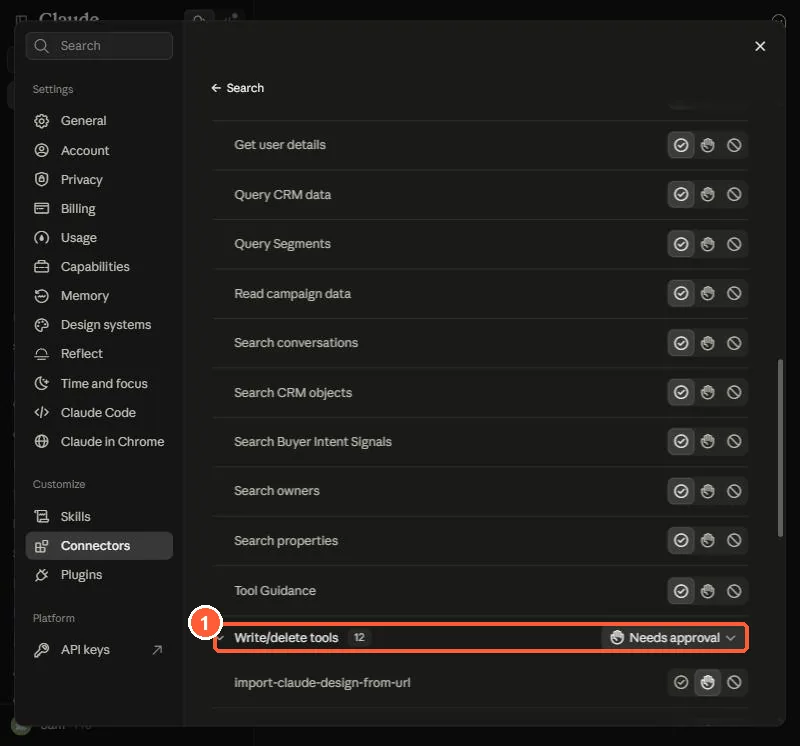
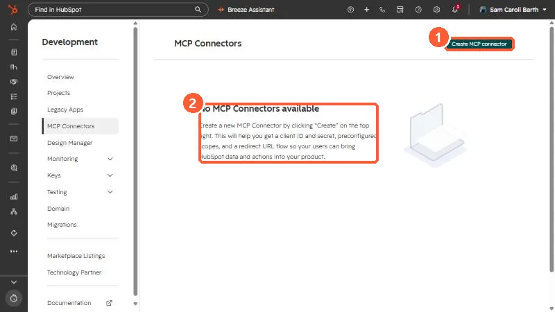

Short answer
In Claude, open the connectors page (HubSpot says Settings > Connectors > Browse, and in my Claude that now lives under Customize), choose HubSpot, click Connect, sign in to the HubSpot account, choose permissions and click Connect app. In a chat, turn HubSpot on from + > Connectors. HubSpot recommends setting the connector's Write tools to Needs Approval, so Claude shows proposed changes before anything is created or updated. You need an active HubSpot user, a paid Claude plan, and either Super Admin or App Marketplace access, or a Super Admin must approve the connector first.
1. Before you connect
- You need an active HubSpot user account and an active Claude account on a paid plan (Pro, Max, Team or Enterprise).
- Super Admins and users with App Marketplace access can connect without prior approval. Everyone else needs a Super Admin to approve the connector first. During approval the Super Admin picks the data permissions and who can install it.
- The connector works on the web, desktop and mobile versions of Claude.
- Everything it does is subject to HubSpot's API usage limits.
Apps you or your admins have connected live under Connected Apps in HubSpot.


My Connected Apps page lists an app named claude, installed in April 2026 from my own account. That is where I look first to see what is connected and when it last ran.
2. Connect Claude to HubSpot
HubSpot's steps say to open Settings > Connectors > Browse, choose HubSpot and click Connect. Claude's menus have changed since that page was written. In my Claude today, Settings > Connectors only shows a note that connectors have moved to Customize.


Follow that link. The Connectors page has Yours and Discover tabs and a search box. Search for HubSpot.


My HubSpot connector already shows as Connected, so I did not run the connect flow again. For a new connection, HubSpot's steps after choosing the connector are listed below.
- Click Connect on the HubSpot connector.
- Choose and sign in to the HubSpot account you want to use.
- On the connection page, select the permissions to allow and click Connect app. You are sent back to Claude.
You can only connect one HubSpot account to a Claude account at a time. To switch accounts, disconnect and reconnect. If you were connected before write access and engagement visibility were added, disconnect and reconnect to pick them up.
3. Use it in a chat
- In the chat window, click + in the bottom left, then Connectors.
- Toggle HubSpot on. I did not capture this step.
- Type your prompt. Claude uses HubSpot context in its answer.
- If you ask it to create or update a record, it may show the proposed change and ask you to confirm. Type Yes to confirm or No to cancel.
HubSpot recommends opening the HubSpot connector's tool settings in Claude and setting Write tools to Needs Approval. If you choose Always allow, edits may happen without asking. Open the connector from Customize > Connectors to find this.




My connector groups its tools. The read-only group (19 tools) is set to Always allow, and the Write/delete group (12 tools) is set to Needs approval. Each tool also has its own three-way switch, and the write tools include managing CRM objects, landing pages, website pages, blog posts and marketing emails.
HubSpot also suggests the latest Claude models, Extended Thinking, starting with one record before a bulk change, and always reviewing what Claude proposes.
Examples HubSpot lists: ask for active deals sorted by close date, update a deal to Closed Won, create a follow-up task, compare email subject lines by clicks, or draft and publish a blog post with an author, featured image, meta description and slug.
4. What it can and cannot change
- Read, create, update, no delete. For contacts, leads, companies, deals, tickets, custom objects, line items, products and more, the connector can read, create and update. It does not support delete. You can delete anything it added directly in HubSpot.
- Bulk is small. Creating or updating in bulk is limited to 10 records at a time.
- Your rules still apply. It applies conditional property rules and custom pipeline stage validations, and it respects your HubSpot user permissions. Association label validations are not applied.
- Sensitive Data. The connector cannot reach custom Sensitive Data properties. If Sensitive Data is turned on for the account, it cannot access any engagement data.
- Pages and posts. It can read, create and update landing pages, website pages, blog posts and marketing emails. For reviewing performance, only published pages and posts have data, and you must name a campaign and date range for individual pages. Blog posts need an author, featured image, meta description, slug and title.
- Workflows and emails. If you ask Claude to draft an email campaign or a workflow, HubSpot says it provides drafted content for you to build in HubSpot.
5. See what it did
HubSpot records connector create and update actions in the account's audit log, attributed to both the user and the Claude connector. Super Admins can also see who connected or reconnected the connector and when. See the Approved apps tab to control who can install it.
6. Your own MCP connector is a different thing
The HubSpot connector for Claude is built on HubSpot's remote MCP server. If you are building your own agent or tool that needs HubSpot access, open Development > MCP Connectors and create one. HubSpot says it gives you a client ID and secret, preconfigured scopes and a redirect URL flow. Your client connects to https://mcp.hubspot.com and must support OAuth with PKCE.


My portal has no MCP connectors of its own, so this page is empty. I only need this page if I build a tool that signs users in to HubSpot. For using Claude itself, the built-in connector above is the route.
After creating the connector you can test it with the MCP Inspector using the Streamable HTTP transport, then run the get_user_details tool to confirm the connection and see what your account allows. More background is in built-in AI connectors vs your own MCP connector and the short version of the Claude connector.
7. Disconnect
In Claude, open Customize > Connectors (HubSpot says Settings > Connectors), click HubSpot, then Disconnect in the top right.